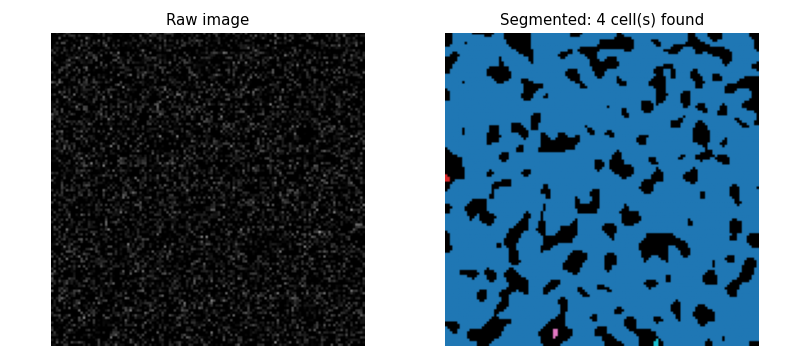
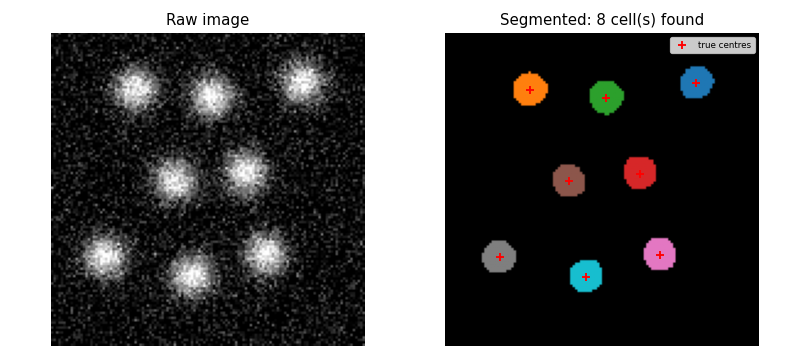

Cell Segmentation in Microscopy Images
15.1 The Problem
- Fluorescence microscopy makes individual cells visible as bright spots on a dark background
- Counting cells and measuring their sizes by hand is impractical at scale
- Automated segmentation identifies which pixels belong to which cell using image processing
- The same pipeline is used in drug-discovery assays, developmental biology, and pathology
15.2 Representing a Fluorescence Image
- Each cell is modelled as a 2-D Gaussian blob centred at \((x_c, y_c)\):
\[I(x, y) = B \exp\!\left(-\frac{(x - x_c)^2 + (y - y_c)^2}{2\sigma^2}\right)\]
- \(B\) is the peak brightness and \(\sigma\) is the width of the cell in pixels
- Multiple cells are summed, independent Gaussian noise is then added and intensities are clipped to zero
- A negative photon count is unphysical
- Cells are placed so that no two centres are closer than
MIN_SEPARATIONpixels- This separation is chosen large enough that the midpoint intensity between two adjacent cells falls below the operating threshold (below)
SEED = 7493418 # RNG seed
IMAGE_SIZE = 128 # pixels per side; kept small for fast tests
N_CELLS = 8 # number of cells to place
CELL_SIGMA = 6 # Gaussian half-width of each cell (pixels)
CELL_BRIGHTNESS = 1.0 # peak intensity (image values are in [0, 1])
NOISE_SCALE = 0.15 # std dev of additive Gaussian noise
# Minimum centre-to-centre separation that keeps midpoint intensity below the
# operating threshold of 0.5. For two Gaussians of amplitude A and sigma σ
# separated by distance d, the midpoint value is 2A·exp(−d²/(8σ²)).
# Setting this below 0.5 gives d > 2σ·sqrt(2·ln(4A)) = 2·6·sqrt(2·ln(4)) ≈ 19.8.
# We use 24 pixels for a comfortable margin.
MIN_SEPARATION = 24def make_image(
n_cells=N_CELLS,
sigma=CELL_SIGMA,
brightness=CELL_BRIGHTNESS,
noise_scale=NOISE_SCALE,
image_size=IMAGE_SIZE,
seed=SEED,
):
"""Return (image, centers) for a synthetic fluorescence image.
Each cell is a 2-D Gaussian with peak `brightness` and width `sigma`.
Independent Gaussian noise with std dev `noise_scale` is added to every
pixel. Pixel values are clipped to [0, 1]. `centers` is a list of
(x, y) pixel coordinates of the true cell centres.
"""
rng = np.random.default_rng(seed)
centers = _place_cells(n_cells, image_size, MIN_SEPARATION, rng)
ys, xs = np.mgrid[0:image_size, 0:image_size]
image = np.zeros((image_size, image_size))
for cx, cy in centers:
image += brightness * np.exp(
-0.5 * ((xs - cx) ** 2 + (ys - cy) ** 2) / sigma**2
)
image += rng.normal(0.0, noise_scale, image.shape)
image = np.clip(image, 0.0, None) # negative counts are unphysical
return image, centers15.3 Step 1: Smoothing
- Raw images are noisy, so the Gaussian filter replaces each pixel with a weighted average of its neighbourhood, suppressing point-to-point fluctuations
- Convolving the signal Gaussian (\(\sigma\)) with the filter Gaussian (\(\sigma_s\)) gives a smoothed cell with sigma \(\sqrt{\sigma^2 + \sigma_s^2}\) and peak brightness:
\[B_\text{smooth} = B \cdot \frac{\sigma^2}{\sigma^2 + \sigma_s^2}\]
- With \(\sigma = 6\) and \(\sigma_s = 2\) this gives \(B_\text{smooth} = 36/40 = 0.90\)
def smooth(image, sigma=SMOOTH_SIGMA):
"""Return the image after 2-D Gaussian smoothing with the given sigma."""
return ndimage.gaussian_filter(image.astype(float), sigma=sigma)15.4 Step 2: Thresholding and Labelling
- Pixels above a threshold form a binary mask
- Connected regions in the mask are individual cells
scipy.ndimage.labelassigns a unique integer to each connected component- Components smaller than
MIN_CELL_SIZEpixels are discarded to remove noise artefacts
def segment(image, threshold=THRESHOLD, min_size=MIN_CELL_SIZE):
"""Return (labeled, n_cells) from a smoothed image.
Steps:
1. Threshold to a binary mask (pixels above `threshold` → True).
2. Label connected components with scipy.ndimage.label.
3. Discard components smaller than `min_size` pixels.
`labeled` is an integer array where 0 is background and 1..n_cells
are the detected cells. Components are re-numbered consecutively
after size filtering so the label values are always contiguous.
"""
binary = image > threshold
raw_labeled, n_raw = ndimage.label(binary)
# Filter by size and re-number labels.
filtered = np.zeros_like(raw_labeled)
new_label = 1
for old_label in range(1, n_raw + 1):
if np.sum(raw_labeled == old_label) >= min_size:
filtered[raw_labeled == old_label] = new_label
new_label += 1
return filtered, new_label - 1def cell_sizes(labeled):
"""Return an array of pixel counts, one per detected cell."""
n = labeled.max()
return np.array([np.sum(labeled == i) for i in range(1, n + 1)])Put these cell-segmentation steps in the correct order.
- Place Gaussian blobs at random non-overlapping positions
- Add Gaussian noise and clip pixel values to zero
- Apply 2-D Gaussian smoothing
- Threshold the smoothed image to produce a binary mask
- Label connected components with
scipy.ndimage.label - Discard components smaller than
MIN_CELL_SIZEpixels
15.5 Choosing the Threshold
- The smoothed noise has standard deviation:
\[\sigma_\text{noise,smooth} = \frac{\sigma_\text{noise}}{2\sqrt{\pi}\,\sigma_s} \approx \frac{0.15}{2\sqrt{\pi}\cdot 2} \approx 0.021\]
- The operating threshold of 0.50 is approximately \(24\,\sigma_\text{noise,smooth}\), so the probability of a noise pixel exceeding it is vanishingly small
- The minimum cell separation (24 px) ensures the midpoint between two adjacent cells has intensity \(2 B \exp(-d^2 / 8\sigma^2) = 2 \exp(-2.25) \approx 0.21\), well below the threshold, so adjacent cells are never merged into one component
SMOOTH_SIGMA = 2.0 # std dev of the Gaussian smoothing kernel (pixels)
# After smoothing, cell peak brightness ≈ σ²/(σ²+σ_s²) = 36/40 ≈ 0.90.
# Threshold 0.5 sits comfortably below 0.90 and well above the smoothed-noise
# ceiling (≈ 5× the smoothed-noise std dev of 0.021; see lesson for derivation).
THRESHOLD = 0.50
# Expected cell area at the operating threshold ≈ π·r_t² where
# r_t = sqrt(−2·ln(threshold/peak)) · σ_eff ≈ 1.085 · 6.32 ≈ 6.9 px, area ≈ 148 px².
# MIN_CELL_SIZE is set well below this to keep real cells while removing noise blobs.
MIN_CELL_SIZE = 30 # minimum pixel count for a detected cellMIN_SEPARATION is set to 24 pixels rather than a smaller value. Why?
- scipy.ndimage.label cannot separate components closer than 24 pixels
- Wrong: label works at pixel level and separates any two components that do not touch.
- At smaller separations the midpoint intensity between two adjacent cells exceeds the threshold, merging them into one component
- Correct: two Gaussians 24 px apart have midpoint intensity ≈ 0.21, safely below the threshold of 0.50; closer cells would merge.
- The Gaussian smoothing filter blurs cells together unless they are at least \(4\sigma\) apart
-
Wrong:
SMOOTH_SIGMA= 2, so \(4\sigma = 8\) pixels — much less than 24; blurring is not the limiting factor. - 24 pixels is the minimum required by the physical image resolution in microns
- Wrong: the separation is derived from the threshold and cell brightness, not from physical calibration of the microscope.
15.6 What the Segmenter Finds in Pure Noise
- The same pipeline applied to an image with no cells at all produces false detections when the threshold is too low
def make_pure_noise(noise_scale=NOISE_SCALE, image_size=IMAGE_SIZE, seed=SEED):
"""Return an image containing only Gaussian noise, no cell signal.
Used to demonstrate the false-positive behaviour of the segmentation
pipeline when the threshold is set below the noise floor.
"""
rng = np.random.default_rng(seed)
return np.maximum(rng.normal(0.0, noise_scale, (image_size, image_size)), 0.0)
- At threshold 0.05 (\(\approx 2.4\,\sigma_\text{noise,smooth}\)) roughly 0.8% of pixels exceed the threshold
- These cluster into a handful of connected blobs
- The size filter (MIN_CELL_SIZE = 30 px) removes most noise blobs in practice because genuine noise blobs are usually smaller than real cells
- The operating threshold makes the size filter a secondary defence rather than the primary one

The noise demonstration shows 4 false cells at threshold 0.05 (no size filter) and 0 false cells at threshold 0.50. What roles do the threshold and MIN_CELL_SIZE play?
- The size filter is the primary defence; the threshold only speeds up computation
- Wrong: without an adequate threshold, large noise clusters pass the size filter too; the threshold does the main work.
- The threshold and the size filter are equally important and interchangeable
- Wrong: they address different failure modes — one filters by intensity, the other by area — and are not interchangeable.
- The threshold is irrelevant as long as the size filter is strict enough
- Wrong: a very low threshold lets many noise pixels cluster into large components that pass the size filter.
- The threshold is the primary defence; the size filter removes small noise blobs that slip past a well-chosen threshold
- Correct: at 0.50 \(\approx 24\sigma\), noise exceedances are vanishingly rare; the size filter is a secondary backstop for the few that remain.
15.7 Testing
- Noise reduction
- Smoothing must reduce pixel-to-pixel variance; an increase would indicate a bug or wrong kernel mode.
- Shape preservation
-
scipy.ndimage.gaussian_filtermust not change the array shape. - Constant image
- A uniform image has no gradients, so smoothing must leave its interior values unchanged. The boundary is affected by zero-padding, so only interior pixels are checked.
- Cell count
-
With default parameters the pipeline must find exactly
N_CELLS = 8cells. This pins the full pipeline against a reproducible result. - Cell sizes
- All detected cell areas must fall in the range 50-350 \(\text{px}^2\). The analytic value is 148 \(\text{px}^2\); the bounds give a factor of 3 on each side to absorb noise, overlap, and discretisation effects.
- Empty result above maximum
- Setting the threshold above the maximum pixel value must return zero cells.
- Pure noise
- At threshold 0.05 pure noise must produce at least one false detection, showing that parameter choice matters. At the operating threshold it must produce none, showing the threshold is adequate.
import numpy as np
from generate_image import make_image, make_pure_noise, N_CELLS, IMAGE_SIZE
from cellseg import smooth, segment, cell_sizes, THRESHOLD
def test_smooth_reduces_noise():
# Gaussian smoothing must reduce pixel-to-pixel variance.
rng = np.random.default_rng(7)
noise = rng.normal(0, 1, (64, 64))
assert smooth(noise, sigma=2).var() < noise.var()
def test_smooth_preserves_shape():
image = np.ones((IMAGE_SIZE, IMAGE_SIZE))
assert smooth(image).shape == image.shape
def test_smooth_constant_unchanged():
# Smoothing a uniform image must leave interior values unchanged.
image = np.full((50, 50), 0.7)
result = smooth(image, sigma=2)
interior = result[4:-4, 4:-4]
assert np.allclose(interior, 0.7, atol=1e-6)
def test_segment_finds_all_cells():
# With default parameters the pipeline must recover all N_CELLS cells.
image, centers = make_image()
labeled, n_found = segment(smooth(image))
assert n_found == N_CELLS, f"Expected {N_CELLS} cells, found {n_found}"
def test_cell_sizes_reasonable():
# Every detected cell must have a pixel area in the physically plausible range.
# At the operating threshold the analytic area is ≈ 148 px²; we allow 50–350 px²
# to accommodate smoothing and noise effects without being unnecessarily tight.
image, _ = make_image()
labeled, _ = segment(smooth(image))
sizes = cell_sizes(labeled)
assert np.all(sizes >= 50), f"Cell too small: {sizes.min()} px"
assert np.all(sizes <= 350), f"Cell too large: {sizes.max()} px"
def test_threshold_above_max_finds_nothing():
# A threshold above the maximum smoothed value must produce zero cells.
image, _ = make_image()
labeled, n_found = segment(smooth(image), threshold=999.0)
assert n_found == 0
def test_pure_noise_false_positives():
# At a threshold of 0.05, pure noise produces false detections.
# Smoothed noise std dev ≈ NOISE_SCALE / (2·sqrt(π)·SMOOTH_SIGMA) ≈ 0.021;
# 0.05 ≈ 2.4σ, so roughly 0.8% of pixels exceed it, forming several blobs.
noise = make_pure_noise()
_, n_false = segment(smooth(noise), threshold=0.05)
assert n_false > 0, "Expected false positives from pure noise at threshold 0.05"
# At the operating threshold (0.50 ≈ 24σ) pure noise must not trigger any cell.
_, n_safe = segment(smooth(noise), threshold=THRESHOLD)
assert n_safe == 0, "Operating threshold should reject all noise blobs"15.8 Exercises
15.8.1 Do the math
A cell has peak brightness \(B = 1.0\) and Gaussian width \(\sigma = 6\) pixels. After smoothing with a Gaussian filter of width \(\sigma_s = 2\) pixels, the smoothed peak brightness is \(B \cdot \sigma^2 / (\sigma^2 + \sigma_s^2)\). What is the result? Give your answer to two decimal places.
15.8.2 Watershed segmentation
The thresholding approach fails when two cells overlap and merge into a single connected component. Implement watershed segmentation: compute the distance transform of the binary mask (scipy.ndimage.distance_transform_edt), find local maxima of the distance map as seed points, and use scipy.ndimage.watershed_ift (or skimage.segmentation.watershed) to split overlapping regions. Demonstrate that it correctly separates two cells whose centres are only 14 pixels apart (closer than MIN_SEPARATION).
15.8.3 Intensity-based cell classification
Add a second cell type to make_image: dim cells with brightness=0.4 alongside the standard bright cells with brightness=1.0. Extend segment to return a label array and a list of per-cell mean intensities, then classify each detected cell as bright or dim using a simple intensity threshold. Report precision and recall for each class.
15.8.4 Effect of noise on count accuracy
Generate 50 images for each of five noise levels: \(\sigma_\text{noise} \in \{0.05, 0.10, 0.15, 0.20, 0.25\}\). Run the full pipeline on each image and record the number of cells found. Plot mean and standard deviation of the cell count as a function of noise level and identify the noise level at which the pipeline begins to fail consistently.
15.8.5 Adaptive thresholding
Real microscopy images often have uneven illumination: the background is brighter in some regions than others. Simulate this by adding a low-frequency gradient:
\(G(x,y) = 0.2 \cdot x / \text{IMAGE_SIZE}\)
to the synthetic image before adding noise. Show that the global threshold misses cells in dark regions or over-detects in bright regions, then implement local thresholding (scipy.ndimage.generic_filter with a percentile-based local estimate) and show that it restores accurate cell counts.